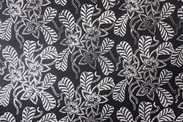

Terwujudnya Kampoeng Batik Kauman sebagai Kawasan budaya, belanja, usaha dan jasa perbatikan produktif kreatif, komunikatif, nyaman dan bersahaja.
Apa itu Kampoeng Batik Kauman Pekalongan?
Kampoeng Batik Kauman merupakan salah satu sentra kerajinan batik di Pekalongan yang diharapkan menjadi icon Kota Pekalongan sebagi Kota Batik. Secara sosial, budaya dan ekonomi kemasyarakatan, Kelurahan Kauman memang salah satu Kelurahan di Pekalongan yang memiliki banyak pengusaha dan pengerajin batik yang terkenal baik nasional mapun terkenal sacara internasional. Kehadiran wisatawan lokal dan asing di Kelurahan Kauman sudah sejak lama mewarnai keseharian Kelurahan tersebut. Keberadaan Kelurahan Kauman di tengah – tengah Kota Pekalongan strategis dari akses pusat ekonomi ( pasar ), perhotelan dan kantor pemerintahan kota juga merupakan salah satu faktor pendukung Kelurahan Kauman dijadikan Kampung Batik sebagai icon Kota Pekalongan.
Kampoeng Batik Kauman Pekalongan merupakan sebuah tujuan wisata budaya dan belanja yang berada di Kota Pekalongan provinsi Jawa Tengah. Secara geografis Kampoeng Batik Kauman Pekalongan sangatlah strategis karena berada dipusat kota Pekalongan yang sangat mudah diakses dari berbagai penjuru. Lokasi yang sangat mendukung untuk tujuan wisata belanja dan budaya bagi masyarakat lokal, nasional dan internasional.
Visi
Terwujudnya Kampoeng Batik Kauman sebagai Kawasan budaya, belanja, usaha dan jasa perbatikan produktif kreatif, komunikatif, nyaman dan bersahaja.
Misi
Pemberdayaan ekonomi lokal dibidang produksi, perdagangan dan jasa perbatikan
Pengembangan usaha produksi, perdagangan, perbatikan, seni-budaya dan kuliner secara kreatif
Mewujudkan lingkungan kehidupan yang produktif, komunikatif dan kreatif
Keberadaan Kampoeng Batik Kauman Kota Pekalongan sangat setrategis dengan pusat niaga dan keramain kota. Disekitar kelurhan kauman terdapat beberapa institusi perbankan dan beberapa fasilitas umum seperti perhotelan dan rumah makan. Bahkan di wilayah kelurahan Kauman, terdapat pusat – pusat makanan dan jajan di pingir alun – alun kota Pekalongan dengan berbagai macam kuliner khas Kota Pekalongan, seperti Nasi Megono, Garang Asem, Tauto, Lontong Opor dan masih banyak lagi ragam kuliner yang bisa dinikmati..
Anggota Kami
Dalam perjalanannya sebagai sebuah perkumpulan / paguyuban warga masyarakat untuk melakukan administrasi dan pengelolaan kawasan, potensi dan sumber daya yang ada, Kampoeng batik Kauman Pekalongan dikelola oleh kepengurusan paguyuban dengan susunan :
Ir. M. Rofiqur Rusdi
Ketua Kampoeng Batik Pekalongan
H. Hasyim Syahbana
Wakil Ketua
Mohammad Alwi
Sekretaris
Ir. M. Bahrus Syakirin, M.Si.
Wakil Sekretaris
M. Nabil Diputra, SE.
Bendahara
Muhammad Khosib
Wakil Bendahara
M. Ani Sofian
Telecenter
Arief Wicaksana
Humas
Galeri
Kumpulan-kumpulan galeri pesona Kampoeng Batik Kauman ada di sini :
Galeri Kami
Proses Pembuatan Batik
Galeri Kami
Proses Pembuatan Batik
Galeri Kami
Kunjungan Batik

Galeri Kami
Contoh Batik
Galeri Kami
Contoh Batik
Galeri Kami
Contoh Batik
Galeri Kami
Contoh Batik
Galeri Kami
Contoh Batik
Galeri Kami
Museum Batik
Galeri Kami
Kampoeng Batik Kauman Pekalongan
Galeri Kami
Kegiatan di Kampoeng Batik Kauman
Galeri Kami
Contoh Batik
Berita Terkini
Kabar terkini dari Kampoeng Batik Kauman Pekalongan yang selalu hangat dan harmonis.
Jadikan Batik Cagar Budaya
Disunting oleh: Belum tahu
Tanggal: Apr 15 2014
BATIK yang prosesnya cap, tulis atau kombinasi di antara keduanya, bukan batik printing, patut dijadikan sebagai cagar budaya dan cagar usaha.
BATIK yang prosesnya cap, tulis atau kombinasi di antara keduanya, bukan batik printing, patut dijadikan sebagai cagar budaya dan cagar usaha. Ini merupakan salah satu bentuk upaya perlindungan dan pelestarian batik di Indonesia.
Pemerintah pusat yang menetapkan melalui Peraturan Presiden (Perpres) tentang batik sebagai cagar budaya dan cagar usaha. Pergub atau Perda Propinsi menetapkan sentra-sentra batik di daerahnya yang memenuhi syarat untuk dijadikan cagar budaya sekaligus cagar usaha.
Salah satu kriterianya adalah nilai kesejarahan perkembangan batik yang berlangsung turun temurun. Misal Kampoeng Batik Lawean di Solo atau Kampoeng Batik Pesindon dan Kauman di Pekalongan atau tempat-tempat baru yang secara by design oleh kalangan masyarakat batik diinisiasi sebagai pusat-pusat pengembangan batik modern tapi tetap bernilai budaya dan.
Kampoeng Batik Masuk 15 Besar
Penyunting: John
Tanggal: 30 Agt 2012
Kampoeng Batik Kauman, Kota Pekalongan dilirik Kementerian Pariwisata dan Ekonomi Kreatif menjadi salah satu desa wisata unggulan. Namun, Kampoeng Batik Kauman harus bersaing.
Kampoeng Batik Kauman Masuk 15 Besar Nominasi Desa Wisata Ungulan
Kampoeng Batik Kauman, Kota Pekalongan dilirik Kementerian Pariwisata dan Ekonomi Kreatif menjadi salah satu desa wisata unggulan. Namun, Kampoeng Batik Kauman harus bersaing dengan 14 desa wisata lainnya se-Indonesia, dua di antaranya berada di wilayah Jawa Tengah.
Tim Juri Penilaian Desa Wisata Unggulan dari unsur akademisi, Djoko Dwiyanto mengatakan, berdasarkan seleksi administrasi, Kampoeng Batik Kauman masuk nominasi 15 besar lomba desa wisata unggulan yang diselenggarakan Kementerian Pariwisata dan Ekonomi Kreatif.
Dari 15 nominasi tersebut, tiga di antaranya berada di wilayah Jawa Tengah. Yakni Dieng Kulon (Kabupaten Banjarnegara), Karangbanjar (Kabupaten Purbalingga) dan Kampoeng Batik Kauman (Kota Pekalongan).
"Kampoeng Batik Kauman adalah satu-satunya nominasi desa wisata dengan produk unggulan batik," terangnya saat berkunjung ke Kampoeng Batik Kauman. Kedatangan arkeolog dari Fakultas Ilmu Budaya Universitas Gadjah Mada dan beberapa tim juri penilaian desa wisata unggulan ke Kampoeng Batik Kauman untuk mengklarifikasi sejumlah hal terkait Kampoeng Batik Kauman, sebagai bagian dari penilaian.
Dalam rangka penilaian itu, tim juri penilaian desa wisata unggulan yang terdiri dari unsur birokrat, akademisi, praktisi pariwisata dan pelaku pariwisata itu melakukan wawancara dengan Ketua Kelompok Sadar Wisata (Pokdarwis) Kampoeng Batik Kauman Rofiqur Rusdi. Dalam wawancara itu, ia didampingi Kepala Dinas Perhubungan, Pariwisata dan Kebudayaan (Dishubparbud) Kota Pekalongan, Doyo Budi Wibowo.
"Kedatangan kami ke sini untuk melakukan klarifikasi terkait profil Kampoeng Batik Kauman yang kami terima. Misalnya, dalam profil itu disebutkan Kampoeng Batik Kauman pernah meraih juara pertama Lomba Pokdarwis tingkat Provinsi Jawa Tengah. Buktinya apa? Karena itu, kami perlu verifikasi. Karena piagam tidak dilampirkan,"
Lawangsewu dan Museum Batik Pekalongan Masuk Nominasi
Penyunting: John
Tanggal: 28 Agt 2012
Dua obyek wisata Jateng, Lawangsewu dan Museum Batik Pekalongan masuk nominasi Cipta Pesona Wisata (Cipta) Award 2012. Keduanya siap bersaing dengan tujuh obyek wisata lain dari luar Jateng guna mendapatkan predikat terbaik.
Lawangsewu dan Museum Batik Pekalongan Masuk Nominasi
Dua obyek wisata Jateng, Lawangsewu dan Museum Batik Pekalongan masuk nominasi Cipta Pesona Wisata (Cipta) Award 2012. Keduanya siap bersaing dengan tujuh obyek wisata lain dari luar Jateng guna mendapatkan predikat terbaik.
Ajang Cipta Award kini memasuki tahap penilaian, tepatnya dimulai hari Rabu- Jumat (29-31/8). Di mana, tim penilai nantinya akan masuk obyek wisata untuk melihat langsung kondisi pariwisata berikut pengelolaannya. Kepala Dinas Kebudayaan dan Pariwisata (Disbudpar) Jateng Prasetyo Aribowo melalui Kepala Seksi Pengembangan Produk Pariwisata Agung Satrio Prakosa menyatakan, Cipta Award merupakan kompetisi tingkat nasional yang diberikan kepada pengelola daya tarik wisata Indonesia seperti alam, budaya, dan buatan. Adapun, aspek penilaian mempertimbangkan kelembagaan, profil obyek wisata, program kerja, materi promosi, akses, teknik promosi dan pengelolaannya.
"Tahun lalu, Jateng memperoleh predikat terbaik untuk kategori Pengelolaan Berwawasan Lingkungan Berkelanjutan lewat obyek wisata Candi Borobudur. Kini, kami berharap Jateng juga bisa kembali menorehkan prestasi tertinggi pada ajang rutin tahunan itu," katanya saat ditemui wartawan di kantornya, Selasa (28/8). Obyek wisata pesaing Jateng berasal dari enam provinsi lain yaitu DKI Jakarta, Jabar, Banten, Sumatera Utara, Bangka Belitung, dan Jambi. Sebagai informasi, nominasi asal DKI Jakarta adalah obyek wisata Seaworld. Menurut dia, pemenang Cipta Award nantinya akan diumumkan pada Hari Pariwisata Internasional di Jakarta, 27 September mendatang. Di samping itu, Jateng juga menempatkan tiga wakilnya yang masuk nominasi Desa Wisata Terbaik. Ketiganya yaitu Desa Wisata Karangbanjar (Purbalingga), Dieng Kulon (Banjarnegara), dan Kampung Batik Kauman (Kota Pekalongan). Khusus Karangbanjar, tahun 2010 pernah menjadi desa wisata terbaik nasional.
Kontak
Hubungi dan Ikuti kami :
Kampoeng Batik Kauman Pekalongan
JL. Jaya Hayam Wuruk Gg. 10 Kauman, 51111, Pekalongan, Jawa Tengah


{kind=link}
{kind=link}
{kind=link}
{kind=link}
{kind=link}
{kind=link}